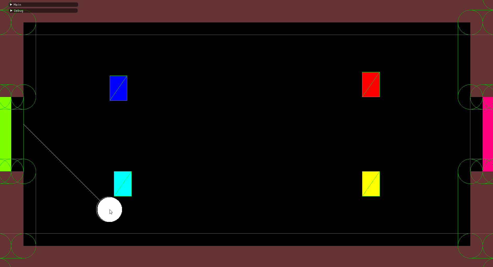

Rush park is a 2D, high-speed, 2v2 sports game. Players pick a character and try to hit a ball into the enemy team's goal. The catch? Each time you hit the ball, it goes faster - with no speed limit! Use your character's ability and teamwork to build speed, score goals, and reach the end level!
"Enoom" was a team of 11 people. There were 5 programmers, 3 designers, and 3 artists.
Rush Park was built with a custom engine written in C/C++ using OpenGL 3 and FMOD.
Rush Park's engine is built on top of an entity component system (ECS) architecture. Everything that shows up in the level is an entity with attached components to affect the entity's behavior. Engine systems grab lists of components and update the state of each component (it doesn't care what entity it's attached to). ECS is a desireable architecture for games because it provides great flexibility and potential for efficiency when building complex systems. Also, entities and components can be completely data driven. This set up the engine nicely for when I built a powerful editor for designers and artists.
In my opinion, implementing an ECS architecture is a good idea when building a game - especially with a larger team or larger game. There are some downfalls, though. Towards the beginning of game development (and especially with a lack of experience), you don't really know what functionality the game needs yet. Therefore, it's hard to determine what systems and components the game should have. It's very easy to create too specific or too general components. Too specific: the game becomes too narrow and designers can't easily change the game or add features. Too general: the engine quickly becomes complex and unwieldy. Deciding if the pros outweigh the cons would change depending on your team. Our team bounced from "too specific" to "too general." Though, it was a great learning experience. Here's a great talk showing what can be done with ECS: "Overwatch Gameplay Architecture and Netcode"
Rush Park's physics was a critical component of gameplay. Since the ball could travel at arbitrary speed, tunneling immediately became an issue. The ball would travel through walls and corners and behave unpredictably. I had to do a significant amount of research to figure out how to solve this including talking to professors/TAs, reading articles, and watching videos. This is a particularly heplful video: Handmade Hero Day 050 - Basic Minkowski-based Collision Detection. Here is my resulting solution:
Here's the game frozen in time as I synthetically move the ball:
The white line shows the ball's travel path over the course of 1 frame and the white circles show collisions against walls. The green lines show the dialated wall geometry the ball considers when detecting collisions. The end of the white line shows where it will end up 0.016ms from now (the ball would be going very fast). This solution worked well for us because we needed accurate collision detection and resolution. The ball could possibly bounce off hundreds of walls in 1 frame. If we had used a stepping algorithm, that might have been very slow and not sufficiently accurate.
In Rush Park, everything is an alpha-blended, textured quad. This meant drawing could be done more efficiently with instancing. I set this up by having everything in the engine draw by adding model information to the queue of models to draw. Then, before a frame draw, the rendering system would order the models by depth, mesh and texture, and draw the entire game using instanced lists. This significantly improved rendering performance, especially for our particle systems.